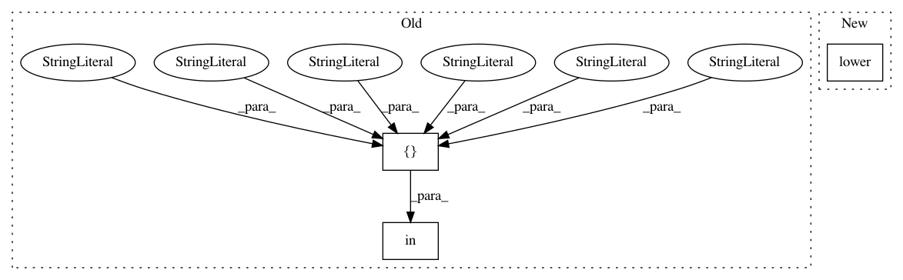

dc10409f7f4aaf0f76fda4ce30d48164044dd265,src/skmultiflow/data/file_stream.py,FileStream,__init__,#FileStream#Any#Any#Any#,61
Before Change
def __init__(self, file_opt, targets_index=-1, num_target_tasks=1):
super().__init__()
// default values
if file_opt.file_type in ["CSV", "csv", "Csv", "cSv", "csV", "CSv", "CsV", "cSV"]:
self.read_function = pd.read_csv
else:
raise ValueError("Unsupported format: ", file_opt.file_type)
After Change
def __init__(self, file_opt, targets_index=-1, num_target_tasks=1):
super().__init__()
// default values
if str(file_opt.file_type).lower() == "csv":
self.read_function = pd.read_csv
else:
raise ValueError("Unsupported format: ", file_opt.file_type)
In pattern: SUPERPATTERN
Frequency: 3
Non-data size: 3
Instances
Project Name: scikit-multiflow/scikit-multiflow
Commit Name: dc10409f7f4aaf0f76fda4ce30d48164044dd265
Time: 2018-04-05
Author: jacob.montiel@gmail.com
File Name: src/skmultiflow/data/file_stream.py
Class Name: FileStream
Method Name: __init__
Project Name: has2k1/plotnine
Commit Name: b963d528e3abd5084cbed4ee2d1ceaad245c42f4
Time: 2015-09-16
Author: has2k1@gmail.com
File Name: ggplot/utils/palettes.py
Class Name:
Method Name: color_palette
Project Name: thtrieu/darkflow
Commit Name: 4b36cc9e6285d39efba8319cbd687cd60d5eeecb
Time: 2017-12-04
Author: daniel.kermany@gmail.com
File Name: darkflow/net/yolo/misc.py
Class Name:
Method Name: is_inp